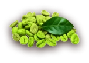
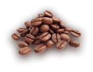
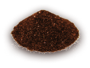

Steps of manufacturing our products

01

Harvest occurs annually when the coffee beans reach maturity and are collected for processing.
02

The beans are dried using a wet or dry technique, depending on the taste we want to obtain.
03

The coffee is roasted and acquires its flavor by processing the grain in ovens.